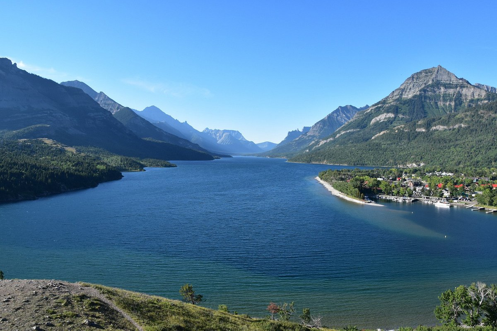
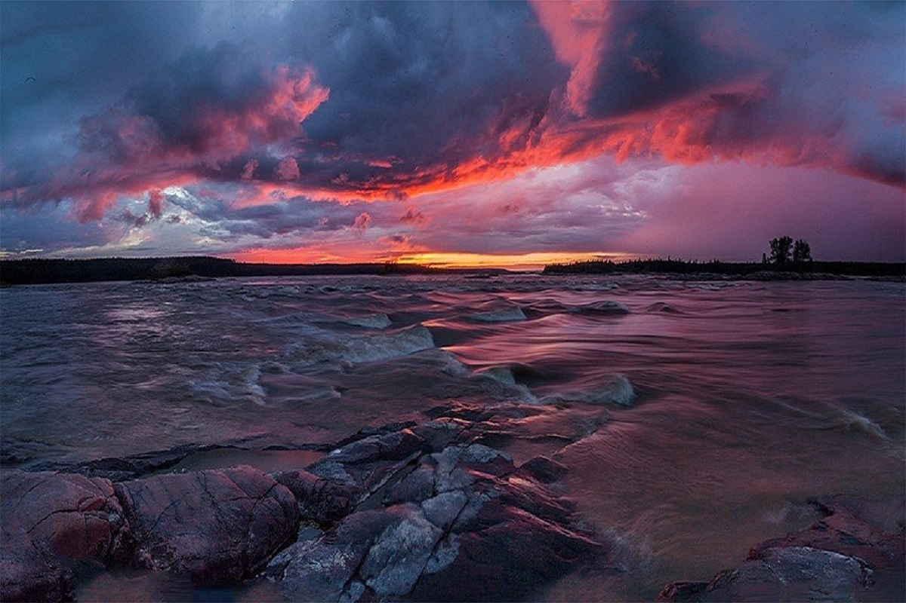
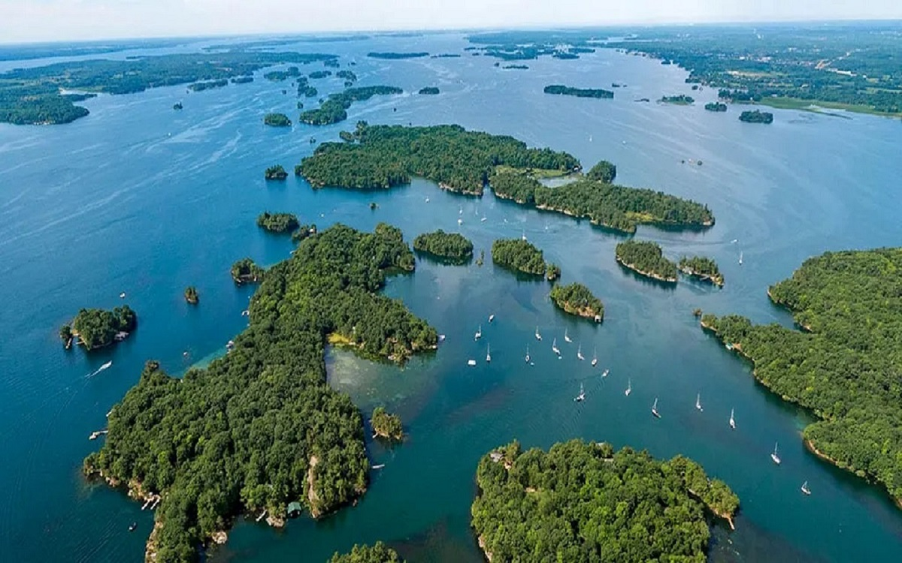

Международный парк мира Уотертон-Лейкс-Глейшер (Waterton Lakes National Park)
Международный парк мира Уотертон-Лейкс-Глейшер — первый в мире из национальных парков подобного типа. Он был учрежден в 1932 годув результате слияния двух парков на границе с США — Национального парка Уотертон-Лейкс (провинция Альберта) и Национального парка Глейшер (Британская Колумбия). Американская часть парка занимает 4102 км², она изобилует ледниками, реликтовыми хвойными лесами. Основной причиной объединения парков стало сохранение исключительного разнообразия ландшафтов и присущего им растительного и животного мира.

Национый парк Вуд-Баффало
Вуд-Баффало — национальный парк на территории провинции Альберта и Северо-Западных территорий, Канада. Основан в 1922 году. Крупнейший национальный парк в стране и один из крупнейших в мире

Тысяча островов (англ. Thousand Islands)
Тысяча островов (англ. Thousand Islands) — природная достопримечательность Канады и США. Представляет собой архипелаг островов, тянущихся вдоль границы Канады и США по реке Святого Лаврентия в месте её истока с северо-востока озера Онтарио.
Национальный парк Банф (Banff National Park)
Национальный парк Банф — старейший национальный парк Канады, созданный в 1885 году в канадских Скалистых горах. Парк расположен в 110—180 км к западу от города Калгари в провинции Альберта, занимает 6641 км² в горной местности[1] с множеством ледников и ледовых полей, густыми хвойными лесами и альпийскими пейзажами. Трансканадское шоссе проходит от озера Луиз как бульвар Банф-Уиндермир на юге до национального парка Джаспер и как бульвар Ледяных полей (Ледяной бульвар) к северу от Трансканадского шоссе[2]. Соседство: с запада примыкают местные леса и национальный парк Йохо, национальный парк Кутеней — на юге, и парковый комплекс Кананаскис Кантри (англ. Kananaskis Country) на юго-востоке, включающий несколько парков и кемпингов, а также один экологический заповедник. Основной коммерческий центр парка — город Банф в долине реки Боу.

Nullam vitae nunc vulputate
In pellentesque cursus velit id posuere. Donec vehicula nulla.

Phasellus magna faucibus
Nulla dignissim libero maximus tellus varius dictum ut posuere magna.
Proin quis mauris
Etiam ultricies, lorem quis efficitur porttitor, facilisis ante orci urna.

Gravida quis varius enim
Nunc egestas congue lorem. Nullam dictum placerat ex sapien tortor mattis.
Morbi eget vitae adipiscing
In quis vulputate dui. Maecenas metus elit, dictum praesent lacinia lacus.

Habitant tristique senectus
Vestibulum ante ipsum primis in faucibus orci luctus ac tincidunt dolor.

Pharetra ex non faucibus
Ut sed magna euismod leo laoreet congue. Fusce congue enim ultricies.

Mattis lorem sodales
Feugiat auctor leo massa, nec vestibulum nisl erat faucibus, rutrum nulla.


{kind=link}
{kind=link}
{kind=link}
{kind=link}
{kind=link}
{kind=link}